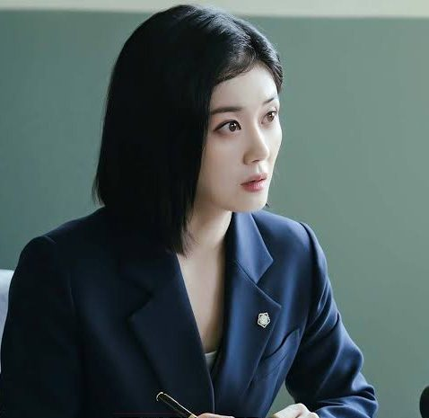
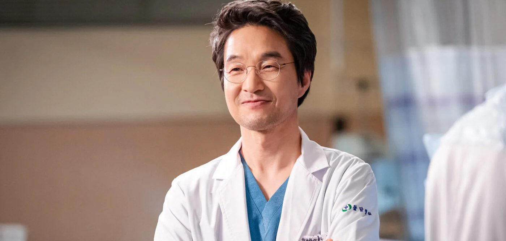

슈퍼히어로는 아닙니다만
드라마에서 찾아보는 ‘전문직 히어로’의 쾌감
SBS M&C 공공/네트워크팀 김진만 프로
이제는 지나간 유행이 된 듯했던 슈퍼히어로물의 기세가 올해 다시금 매섭다. <스파이더맨: 브랜드 뉴 데이>가 북미 역대 박스오피스 1위를 기록함과 더불어 국내에서도 900만명이 넘는 관객을 모은 한편, 연말 공개 예정인 <어벤져스: 둠스데이> 역시 사전 예매량 만으로 미국 현지에서 흥행 신기록을 써내려가고 있다. 우리와 일면 비슷해 보이는 인물이 우리를 초월한 능력으로 세상을 구하고 악당을 무찌르는 이야기는 때를 막론하고 짜릿하기 때문일까. 요즘 같이 전세계가 당양한 이유들로 시름시름 앓고 있는 때에는 더욱 더 그 짜릿함이 와닿을지 모르겠다.
기술력의 차이 떄문인지, 한국에서는 슈퍼히어로물이 이처럼 번성하기를 기대하는 건 시기상조인 듯하다. 그러나 매한가지로 부조리한 세상을 타파하는 카타르시스를 기대하는 한국의 대중을 위해 마련된 특화 장르가 있으니 바로 ‘전문직 히어로’다. 꼭 물리적 응징이 아니더라도 저마다의 직업적 특질을 기반으로 다양한 방식의 부조리 해소를 보여주는 이 ‘전문직 히어로’ 장르는 주로 드라마에서 나타나며 시청자들에게 긴 시간 꾸준히 쾌감을 선사하고 있다. SBS에서도 이런 ‘전문직 히어로’ 물이 방송을 하고 있거나 앞두고 있어 그 다양한 면면을 살펴보고자 한다.
메스로 세상을 수술하다 – 메디컬 히어로
과거의 메디컬 드라마라 하면 병원 안에서 펼쳐지는 다양한 인간군상을 휴먼드라마적인 터치로 그리는 경우가 많았다면, 요즘에는 환자를 살린다는 의사의 직업적 사명을 ‘정의구현’이라는 키워드와 맞닿게 하여 병원 안팎의 부조리를 특유의 캐릭터로 깨부수는 ‘메디컬 히어로’ 장르가 인기를 얻고 있다. 대표적인 예가 시즌 3까지 나오며 SBS의 시즌제 드라마 선두주자로 자리매김했던 [낭만닥터 김사부]와 첫 시즌의 성공에 힘입어 현재 시즌 2가 제작중인 [중증외상센터](넷플릭스)다. [낭만닥터 김사부]의 김사부(한석규)와 [중증외상센터]의 백강혁(주지훈) 모두 제도와 규정에 얽매이기 싫어 하는 야인 기질의 다소 거친 캐릭터이지만 환자를 살리는 것을 그 무엇보다 우선하는 사명으로 생각하는 인물이라는 점이 공통적이다. 이러한 주인공들의 특성이 [낭만닥터 김사부]에서는 ‘낭만’이라는 키워드에 함축되어 병원 사람들과 시청자들을 감화시켰고, [중증외상센터]에서는 다소 만화적이더라도 변화무쌍 천하무적인 ‘의사 히어로’를 탄생시키며 시청자들을 열광케 했다. 특유의 캐릭터와 압도적인 실력, 또렷하고 바람직한 사명으로 모범적인 수제자들까지 두게 된다는 점도 이들이 통하는 부분이다.
현재 방영중인 SBS 금토드라마 [닥터X: 하얀 마피아의 시대] 역시 이러한 메디컬 히어로물의 계보를 잇는다고 할 수 있겠지만서도, 제목에 들어간 ‘마피아’란 표현에서 알 수 있듯 보다 ‘다크 히어로’에 가까운 경우라고 할 수 있겠다. 주인공 계수정(김지원)이 ‘용역의사’라는 특수한 포지션이기에 가능한, 병원 내에 만연한 부조리를 오직 실력으로 당당히 깨부수는 캐릭터이면서도 내면에 어두운 과거를 품고 있다는 점에서 히어로 캐릭터에 비유하자면 ‘슈퍼맨’이나 ‘스파이더맨’보다는
